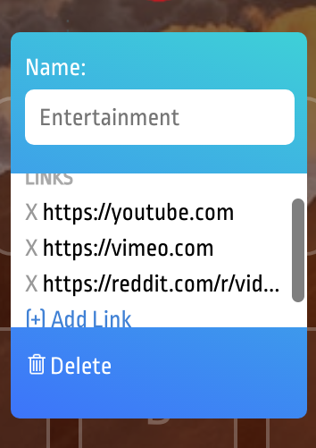

• Developed using React and Redux (alongside the back-end team) highly requested premium features including new tab workspaces, better backgrounds, among other features
• Quickey boasts 500,000+ tabs launched, 5,000 sessions/day, 4.8/5 stars out of 200+ reviews, and a #6 feature on ProductHunt.
• Quickey is a time saving chrome extension that launches any tab (or tabs!) you want, straight from your new tab page.
Quickey is a productivity app that quickly launches new tabs with a push of a key. It was created by a past UCLA student in response to new tab apps like Momentum that do not have much functionality in an attempt to make one's life more productive and less annoying. As a front-end developer, I was tasked with further building the product and facilitating its design as well.
So far, 500,000+ tabs have been launched over thousands of users through our application, saving 25,000+ minutes of people's time. The extension has been rated an average of 4.8/5 stars with 200+ ratings, with people expressing interest in paying for a plus version with highly-requestes features. Because of this, my task was to implement these features and to put it behind a Stripe paywall.

Having many thousands of downloads, we're bound to get suggestions. And it turns out that one of the most suggested features was the ability to launch multiple apps at once. We reached out to our customers to get feedback, and we realized that people were more than willing to pay a few dollars per year to gain this functionality.
Turns out that launching multiple tabs at once is a more difficult feature than we initially thought. I had to create an entire workspace hover tooltip, where users can add, edit, and delete links (as pictured above and below). I also built a splash screen for free users to see if they click 'create workspace' without having Quickey Plus.

Because the code was not previously documented well, it was a pain to understand how it ultimately worked. Lots of time was dedicated to thouroughly understanding React/Redux worked and how the existing code worked. This was my first experience combing through an existing, large database, and it turned out to have provided quite a bit of industry experience, as I did the same but on a much larger scale as an intern at Apple.
Using React and the Chrome Extensions API, I implemented the workspaces. I had to balance the functionality with good design and animation, as the app was incredibly front-end focused; keeping animation flow and maintaining fades while minimizing jitter was key, and I'm lucky that my design background assisted in doing this.
